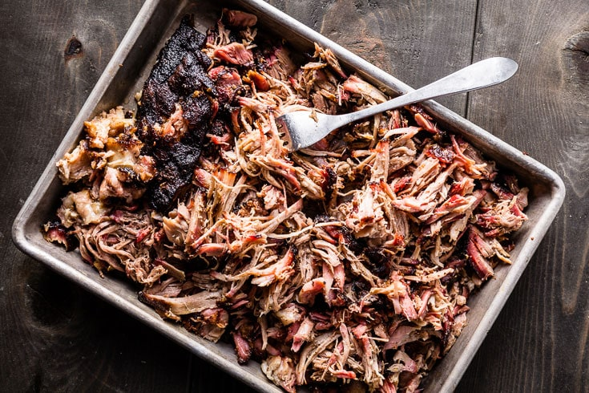

Tims Smoked Pork Butt
Description
Smoke up some pork butt for some pull pork! Just put the rub on, let it sit and then throw it on the smoker. After time you will have great pulled pork!
Ingredients
- 2/3 cup brown sugar substitute
- 3 tablespoons applewood rub seasoning
- 2 tablespoons onion powder
- 2 tablespoons smoked paprika
- 1 tablespoon garlic powder
- 1 tablespoon salt
- 1 tablespoon ground black pepper
- 8 pounds boneless pork butt
- 2 (12 fluid ounce) cans or bottles stout beer, divided
- 2 (12 fluid ounce) bottles hard apple cider, divided
Directions
- Combine brown sugar substitute, applewood rub, onion powder, smoked paprika, garlic powder, salt, and pepper in a bowl for seasoning.
- Trim pork butt, but leave a layer of fat on one side. Rub entire pork butt with 1/2 cup of seasoning blend. Cover with plastic wrap and let sit in the refrigerator for 3 days. Set aside remaining seasoning blend for another use
- Preheat smoker to 230 degrees F (110 degrees C). Place your favorite wood chips or pellets into the smoker.
- Place pork butt onto the middle rack, with the fat side facing up. Pour 12 ounces of stout and 12 ounces of cider into a drip pan.
- Smoke pork for 4 hours. Add remaining stout and cider to the drip pan and add more wood chips or pellets. Continue to smoke for 3 hours more. Remove the drip pan, pour drippings into a bowl, and reserve.
- Continue to smoke the pork until a meat thermometer reaches 196 degrees F (91 degrees C), 1 to 3 hours more. Let rest for 1 hour.
- PULL THE PORK AND ENJOY!